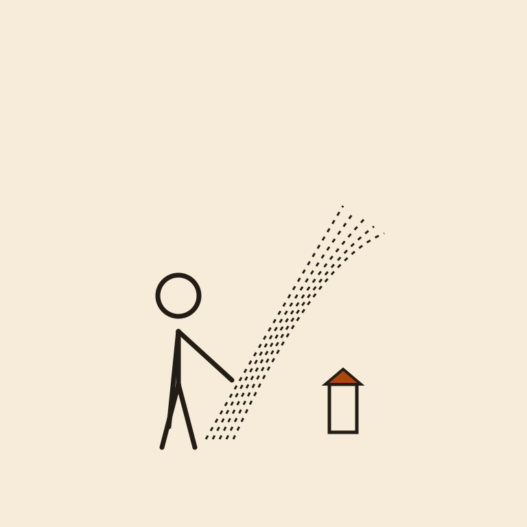
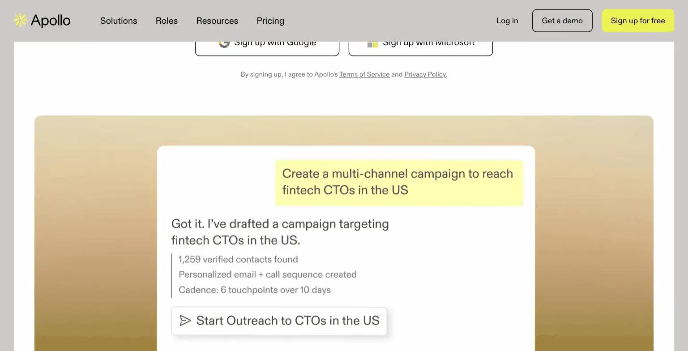
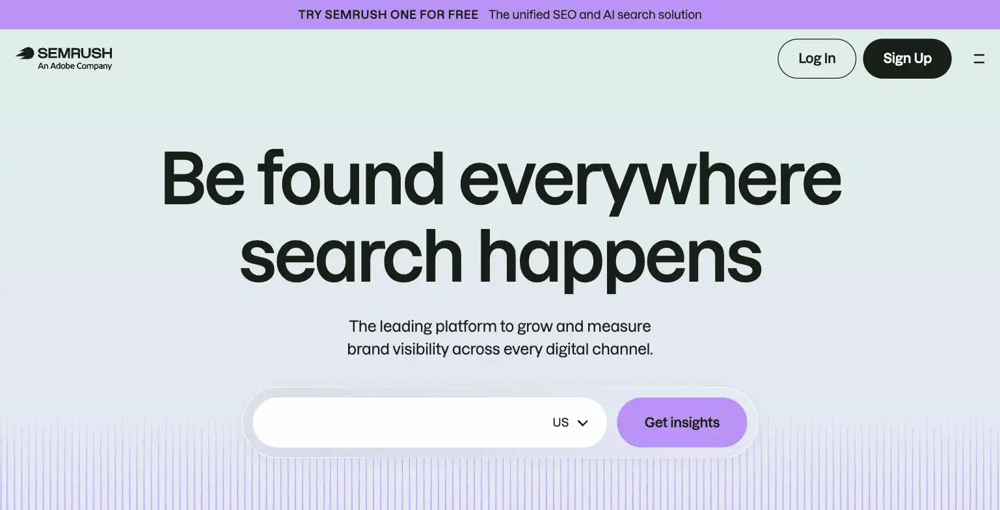

Semrush

Every merchant learned the secret password to the front of the market. The moment they did, the guild changed the password.
Semrush is a comprehensive SEO research platform with AI-assisted content and keyword tools, relevant to a site like this one, not just e-commerce. Pricing starts at $139.95/month (Pro, $117.33/month billed annually) up to $499.95/month (Business). The site's verdict is genuinely the most capable SEO tool on this list, but the price is real overkill for most solo operators; only justify it if SEO and organic content are the core growth channel for your business, not a side task.
Semrush is the SEO tool agencies swear by and solopreneurs quietly wince at the invoice for. $139.95 a month buys serious keyword research, and a serious reason to actually use all of it.
- Value for price3.5/10
- Capability9/10
- Ease of use5/10
- Trial safety5/10

Semrush combines keyword research, site audits, position tracking, competitor analysis, and an AI content assistant into a single platform, the kind of depth that professional SEO agencies rely on, which is exactly why the pricing is built around agency and in-house marketing team budgets rather than a solo operator's.

Semrush's AI Copilot assistant is included even on the entry Pro tier, surfacing recommended actions based on your specific site's audit data and competitor gaps, rather than generic SEO advice, which is a meaningful step up from free keyword tools.
Example from semrush.com. Not independently tested by Solos Gems.Pricing breakdown
- Pro ($139.95/mo, $117.33/mo billed annually): Keyword research, site audits, position tracking for 500 keywords, free Semrush Copilot AI assistant, 5 projects
- Guru ($249.95/mo, $208.33/mo billed annually): Adds Content Marketing Platform, historical data, multi-location tracking, 1,500 tracked keywords, 15 projects
- Business ($499.95/mo, $416.66/mo billed annually): API access, Share of Voice metrics, highest usage limits for larger teams
- Enterprise: Custom pricing for advanced, large-scale requirements
The honest budget conversation
At $139.95/month minimum, Semrush costs more per month than most solopreneurs spend on their entire software stack combined. That's not a knock on the tool's quality, it's genuinely one of the most capable SEO platforms available, but the price only makes sense if organic search traffic is directly and measurably tied to your revenue. If SEO is something you do occasionally alongside other marketing, cheaper or free tools (Google Search Console, Ubersuggest, or even ChatGPT for keyword brainstorming) will cover the basics at a fraction of the cost.
Pros
- Genuinely the most comprehensive SEO research platform on this list
- AI Copilot surfaces specific, site-grounded recommendations, not generic advice
- Justified cost for businesses where organic search is a primary revenue channel
Cons
- Price is real overkill for most solo operators, $139.95/month minimum
- Steep learning curve to use the full feature set effectively
- Free and cheap alternatives cover basic keyword research adequately for casual use
Common questions
Is Semrush worth it for a solo operator?
Only if organic search is your primary, core growth channel, not a side task. At $139.95/month minimum, it's genuinely overkill for most solo businesses that treat SEO as one channel among several.
Is there a cheaper way to do basic keyword research?
Yes. Free and cheap alternatives cover basic keyword research adequately for casual use, Semrush's price is justified by its depth, not by features unavailable elsewhere at a lower cost.
How steep is the learning curve?
Steep. Semrush packs a lot of functionality into its interface, and using the full feature set effectively takes real time to learn, not something you'll master in a first session.